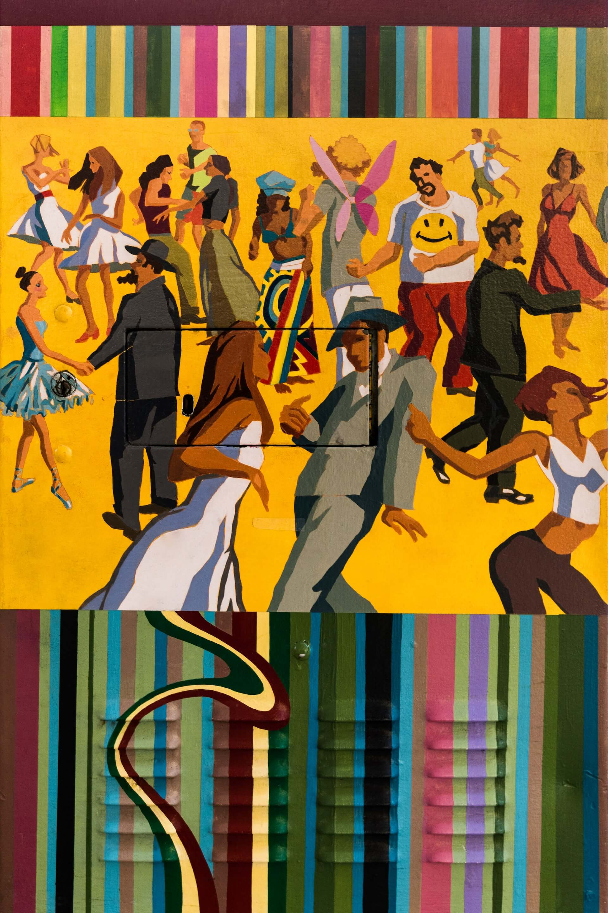
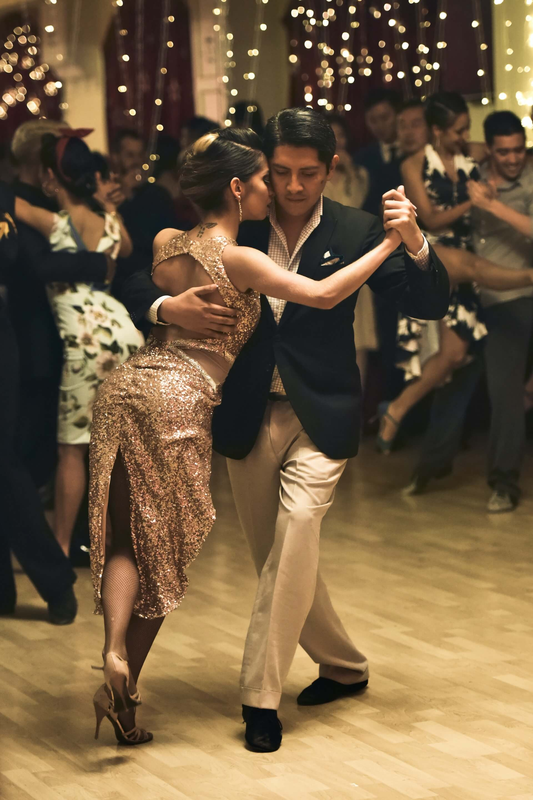
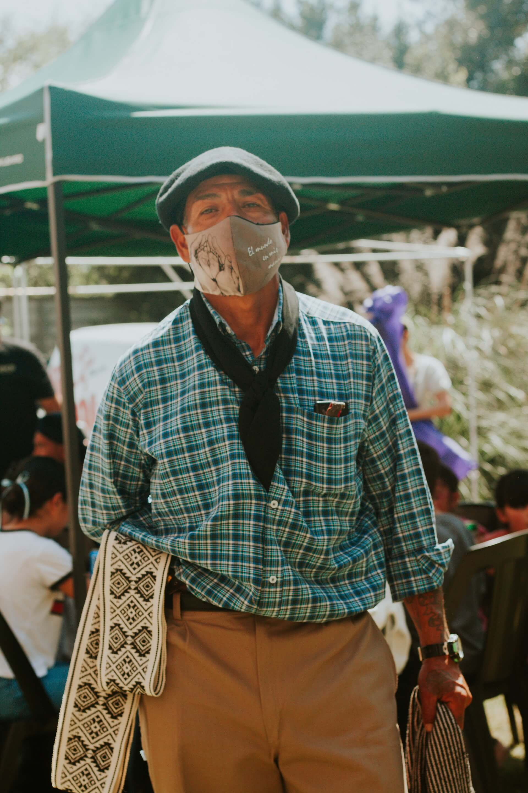
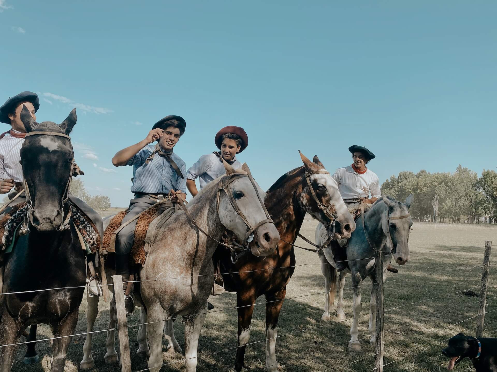
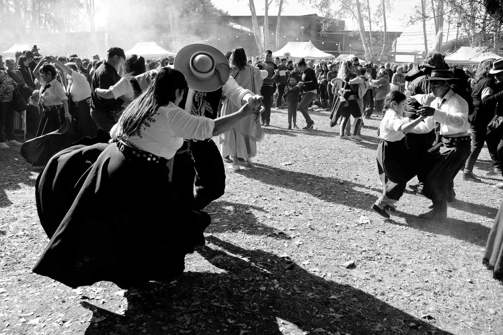

The tango is a ballroom dance, musical style, and song. It evolved around 1880 in
dance halls and, perhaps, brothels in the lower-class districts of Buenos Aires.
Here, the Spanish tango, a light-spirited variety of flamenco,
merged with the milonga, a fast, sensual, and disreputable Argentine dance.
It also shows possible influences from the Cuban habanera. In the early 1900s,
the tango became socially acceptable, and by 1915, it was a craze in fashionable
European circles. The first tango music by known composers was published in 1910.


Yerba Mate is one of the most popular types of tea because of its many
unique aspects. Not only is it a great beverage to quench thirst, but it has also been used in
ceremonies for many years. Its main ceremonial purpose is to help people bond
with each other; the Yerba Mate drinking ritual, known as Tomando Mate, represents
hospitality and welcoming and originated in South America. Today, people all over
the world drink this tea for everything from its health benefits to its gentle jolt
of energy.
The gauchos of Argentina are the iconic traditional Argentine cowboys who
have played a significant role in the culture and history of the region.
Renowned for their horsemanship skills and their connection to the cattle
industry, gauchos inhabit the plains and surrounding areas of Argentina,
Uruguay, Paraguay, and Brazil. Deeply rooted in the rural lifestyle of the
Argentine countryside, gaucho culture is a fascinating and influential aspect
of Argentine identity.


